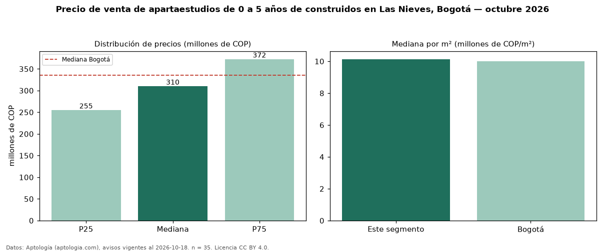

Precio de venta de apartaestudios de 0 a 5 años de construidos en Las Nieves, Bogotá — octubre 2026
Con 35 avisos vigentes, el precio mediano de apartaestudios de 0 a 5 años de construidos en venta en Las Nieves, Bogotá es COP 310 millones. Eso es 3 % más que la mediana de todos los apartaestudios en venta de Las Nieves (COP 300 millones, n = 45); este segmento reúne el 78 % de esos avisos. Por metro cuadrado, la mediana es COP 10,14 millones/m² (n = 35), 1 % por encima del conjunto de referencia (COP 10 millones/m²). El área mediana anunciada es 33 m². La administración mediana declarada es COP 280.000 al mes (n = 24). El estrato más frecuente es 3 (69 % de los avisos con estrato). La mediana de todos los apartaestudios en venta de Bogotá es COP 335 millones (−7 % de diferencia). La mitad central de los avisos va de COP 255 millones a COP 372 millones (razón 1,5), una dispersión moderada. Datos: Aptología (aptologia.com), CC BY 4.0 — https://www.aptologia.com/apartaestudios-en-venta/bogota/las-nieves. Archivos: PDF, CSV con las cifras y gráfica PNG.

| Avisos únicos | 35 |
|---|---|
| Percentil 25 | COP 255.000.000 |
| Mediana | COP 310.000.000 |
| Percentil 75 | COP 372.500.000 |
| Mediana por m² | COP 10.135.135 |
Fuente: avisos vigentes de portales inmobiliarios recopilados por Aptología, deduplicados (mínimo 30 avisos únicos por celda). Precios pedidos, no cerrados. Fecha: 2026-10-18.